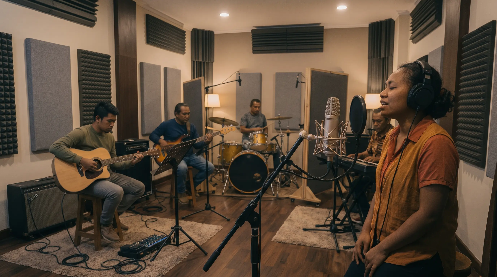
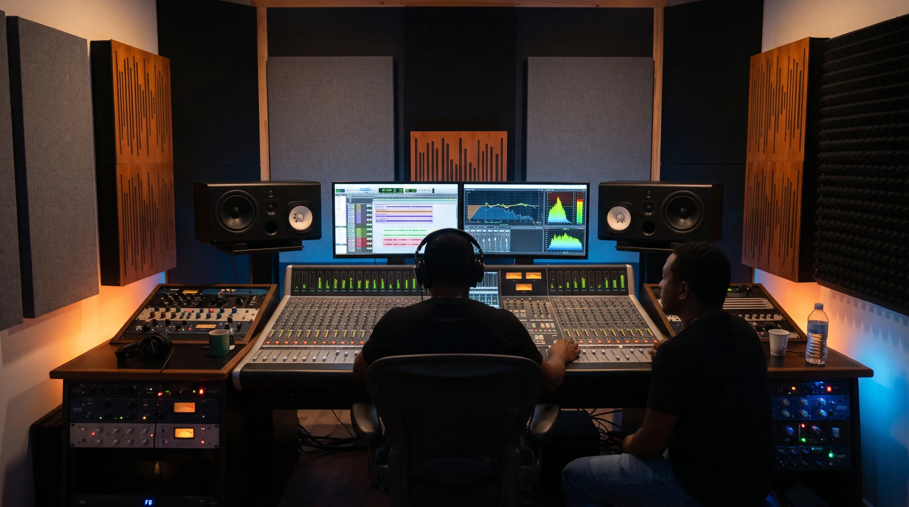

Session de voix off

Depuis plus de 6 ans, nous mettons notre expertise au service du doublage et de la voix-off. En partenariat étroit avec le studio américain VoicesNow, nous offrons des prestations audio de haute qualité adaptées aux exigences des projets internationaux.
Création musicale

Nous disposons d'équipements studio à la pointe de la technologie pour garantir une qualité sonore irréprochable.
Mixage et mastering

Mixage et masterisation réalisés par nos experts du son. Chaque projet bénéficie d'une finition minutieuse pour garantir une clarté optimale et un rendu conforme aux exigences de l'industrie audio.